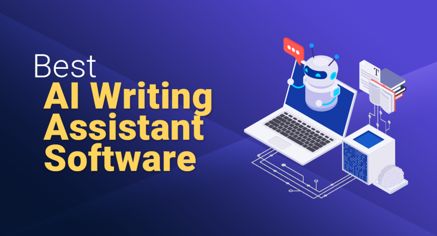
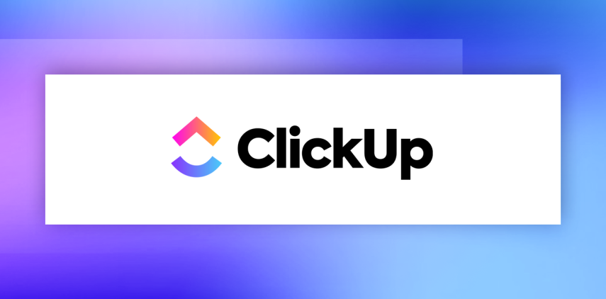

Best AI Writing Assistant Software
James McGill | Updated on January 11th 2025Privacy and Technology Consultant In a hurry? Here’s the top AI Writing Assistant Software for 2025:
Ever since ChatGPT hit the scene last year, AI writing tools have been making headlines. While they haven’t taken over the writing world just yet, they’ve advanced significantly and can be incredibly helpful in the right situations. When used properly, these AI text generators can boost productivity, streamline your workflow, and help you craft more polished, on-brand content.
However, it's important to remember that all AI writing software still requires human oversight to produce the best results. On their own, these tools can generate generic or even inaccurate content, despite seeming like something a human might write. As AI tools become more popular, readers are also becoming more adept at recognizing the hallmarks of AI-generated text and are more likely to be wary of content that feels a bit off or lacks a personal touch. So, while these writing tools are becoming incredibly powerful, they’re most effective when you work alongside them rather than just letting them take the reins.
If you’re looking for an AI tool to help you write engaging content, speed up your blog posts, or take some of the grunt work out of writing, you’re in the right place. Let’s dive in!
An overview of the best AI Writing Assistant Software for 2025:
- 🥇 1. Hubspot — HubSpot AI Content Writer is an integrated tool within the HubSpot ecosystem designed to help you create high-quality content quickly and efficiently, including blog posts, emails, landing pages, and social media updates. It leverages AI to generate, edit, and optimize content, seamlessly fitting into your existing marketing workflow.
- 🥈 2. Clickup — ClickUp AI Writer is an integrated writing tool within the ClickUp platform, designed to help you create, edit, and refine content directly within tasks, documents, and comments. It streamlines content creation with features like grammar checks, summarization, and role-based prompts, making it a versatile tool for teams managing projects and communications.
- 🥉 3. Rytr — Rytr helps you create high-quality content with ease, from blog posts and emails to social media ads and product descriptions, all through a simple and intuitive interface.
- Frequently Asked Questions about AI Writing Assistant Software (FAQ).
What Are AI Writing Assistants?
AI writing assistants are advanced tools powered by artificial intelligence that assist users in creating high-quality text with minimal effort. By analyzing the context of your writing, these tools can suggest improvements for grammar, style, tone, and clarity. They can also help generate content ideas, provide synonyms, and enhance readability, allowing you to focus more on your message and less on the mechanics of writing.
Benefits of Using AI Writing Assistants
AI writing assistants are transforming how writers and businesses create content, offering numerous benefits that make the writing process more efficient and effective. Here are some of the key advantages:
Time EfficiencyAI writing assistants can significantly reduce the time it takes to produce content. Traditional writing involves drafting, editing, and revising, which can be quite time-consuming. AI tools streamline this process by offering immediate suggestions and corrections, allowing you to move from idea to polished draft much quicker. This is particularly beneficial for businesses that need to generate a high volume of content efficiently.
Cost-EffectivenessBy automating much of the writing and editing process, AI writing assistants reduce the need for extensive human resources. This can save money on hiring professional writers or editors, making it a cost-effective solution for small businesses, startups, and individual creators who need high-quality content without a large budget.
Consistency and ScalabilityMaintaining a consistent tone and style across various pieces of content can be challenging, especially when different writers are involved. AI writing assistants help ensure consistency by providing guidelines and templates that align with your brand’s voice. Additionally, these tools are scalable, making it easy to produce large volumes of content while maintaining quality, helping keep your marketing efforts cohesive and engaging.
Personalization and EngagementAI writing assistants allow for a high level of personalization in your content, making it more engaging for your audience. With features like tone adjustment and context-aware suggestions, these tools help tailor your writing to specific audiences or purposes. Personalized content is more likely to engage readers, increase conversion rates, and build stronger connections with your audience.
AccessibilityTraditional content creation often requires a certain level of writing expertise, but AI writing assistants make the process accessible to everyone. Whether you’re a seasoned writer or a beginner, these tools offer user-friendly interfaces and helpful features that enable you to produce high-quality content without needing advanced skills. This accessibility allows more people to create compelling written material.
Data-Driven InsightsMany AI writing assistants include analytics features that provide insights into the performance of your content. You can monitor metrics like readability scores, audience engagement, and keyword effectiveness to refine your future writing strategies. By leveraging this data, you can continuously improve your content to better meet your audience’s needs.
Incorporating AI writing assistants into your content strategy offers numerous benefits, from saving time and money to enhancing personalization and engagement. As AI technology continues to advance, these tools will likely become even more essential to the content creation process.
Having explored the numerous advantages of AI writing assistants, let’s take a closer look at the top 3 tools we recommend!
1. Hubspot — Best for Marketers and Content Creators

HubSpot's AI Content Writer is your ultimate content creation companion, designed to simplify the way you craft blog posts, emails, landing pages, and social media updates. Integrated seamlessly within HubSpot’s ecosystem, it empowers you to generate and refine content directly within the tools you already know and love. Just type in a prompt or a few keywords, and HubSpot’s AI will draft content that feels natural and professional, saving you time and effort.
Whether you're brainstorming ideas, crafting engaging copy, or polishing your final draft, HubSpot’s AI Content Writer has you covered. It not only helps you come up with relevant topics but also suggests keywords to keep your content SEO-friendly. Plus, its real-time editing features make it easy to maintain a consistent tone that aligns with your brand’s voice. You might need to make a few tweaks to perfect long-form pieces, but it definitely gives you a strong starting point.
If you're a marketer, content strategist, or business owner looking to streamline your content workflow, HubSpot’s AI Content Writer is a game-changer. Its integration with HubSpot’s CRM and marketing tools means you can manage everything from one place, making your job that much easier.
HubSpot’s AI Content Writer is more than just a writing tool. It’s a complete content solution that works within your existing HubSpot setup. Whether you’re drafting social media posts or detailed articles, this tool adapts to your needs, helping you stay consistent and productive. Give it a try to see how it can elevate your content strategy.
Get Hubspot - Write Smarter, Not Harder
2. Clickup — Best for Integrated AI Writing and Project Management

ClickUp AI is an AI-powered writing assistant seamlessly integrated into the ClickUp project management platform, enabling you to generate, edit, and refine content directly within your tasks, documents, and comments. Whether you're drafting project plans, composing emails, or creating marketing materials, ClickUp AI offers a suite of tools to enhance your writing process. With features like grammar and spell check, content summarization, and translation capabilities, it supports a wide range of writing needs. Additionally, role-based prompt suggestions cater to specific functions such as sales, marketing, and engineering, ensuring that the content aligns with your professional requirements.
This tool excels in streamlining your workflow by allowing you to access AI assistance anywhere within ClickUp that accepts text. You can highlight existing text to receive suggestions for improvement, use slash commands to generate new content, or leverage the AI modal for more complex tasks. While the AI-generated content provides a solid foundation, some manual refinement may be necessary to tailor it precisely to your brand's voice and objectives.
ClickUp AI enhances the ClickUp platform by integrating advanced AI writing capabilities directly into your project management environment. Its comprehensive set of features, including content generation, editing, and summarization, makes it a valuable tool for teams aiming to boost productivity and maintain consistency across their communications. By combining project management with AI-assisted writing, ClickUp AI offers a unified solution for managing tasks and creating content efficiently.
Get Clickup - Write Smarter, Not Harder
3. Rytr — Budget-friendly Pick
Rytr is an AI-powered writing assistant that stands out for its ease of use, versatility, and powerful features, making it an excellent choice for content creators, marketers, and businesses looking to streamline their writing process. It offers a wide range of templates and use cases, allowing you to generate high-quality content for various needs, including blog posts, emails, social media updates, and product descriptions. The platform’s user-friendly interface and intuitive design make it accessible to users of all experience levels, while its advanced AI technology produces content that feels natural and human-like. Additionally, Rytr includes helpful features such as a plagiarism checker, built-in SEO tools, and a browser extension that allows you to generate content directly within your favorite platforms.
What sets Rytr apart from other AI writing tools is its affordability and flexibility. With a generous free plan and cost-effective paid options, it is accessible to individuals and small businesses on a budget. Rytr also allows you to customize tone, style, and creativity levels, ensuring that your content aligns perfectly with your brand voice and meets specific needs. While some advanced users might find that complex topics require a bit of editing, Rytr provides a strong foundation that significantly reduces the time and effort needed to create engaging content.
Overall, Rytr is an impressive AI writing tool that offers a wide range of features to enhance your content creation process. With numerous supported use cases, multi-language writing capabilities, an innovative AI image generator, and a user-friendly interface, Rytr provides a versatile platform for a variety of content needs.
Get Rytr - Write Smarter, Not Harder
How Did We Choose The Best AI Writing Assistant Software
We evaluated each AI writing tool based on several key criteria:
- Ease of Use: We prioritized tools that are intuitive and user-friendly, making them accessible to both novice and experienced writers. Platforms that offer clear instructions, helpful support, and collaborative features scored the highest in this category.
- Advanced Features: We looked for AI writing assistants that provide robust capabilities, such as grammar and style suggestions, tone analysis, and content generation. Tools that cater to different writing needs, from creative writing to technical documents, were rated highly.
- Content Optimization: We considered how well each tool helps optimize content for SEO, audience engagement, and readability. Tools that offer keyword suggestions, readability checks, and SEO guidance were particularly valued.
- Quality and Accuracy: High-quality output is essential, so we favored tools that consistently produce clear, error-free, and engaging text. Customer feedback regarding the accuracy of grammar and style suggestions was also considered.
- Cost: We looked for tools that offer a range of pricing options to fit various budgets, including free versions, trials, and flexible subscription plans. Platforms that are affordable for individuals and small businesses but also offer scalable features for growing needs were preferred.By considering these factors, we identified the top AI writing assistants that can help elevate your content creation efforts.
Top AI Writing Assistant Software - Frequently Asked Questions
📝 What's the difference between traditional writing tools and AI writing assistants?
Traditional writing tools, like Microsoft Word or Google Docs, provide a platform for drafting and editing text manually, relying heavily on the user’s skills to refine grammar, style, and structure. AI writing assistants, on the other hand, use artificial intelligence to enhance the writing process. They automatically suggest improvements for grammar, style, tone, and clarity, helping to polish your text with less effort. While traditional tools offer basic spell-check and formatting capabilities, AI writing assistants provide more advanced features such as content suggestions, SEO optimization, and context-aware enhancements, making them ideal for efficient, high-quality writing without the steep learning curve.
🖌 What is an AI writing assistant?
An AI writing assistant is a software tool that uses artificial intelligence to help you write more effectively. These assistants analyze your text and offer suggestions to improve grammar, style, readability, and coherence. Some can even generate content based on prompts or keywords, making them useful for creating blog posts, marketing materials, emails, and more. AI writing assistants automate much of the editing and revision process, making writing faster and more accessible, even for those without strong writing skills.
🚀 How quickly can an AI writing assistant improve your writing?
AI writing assistants provide real-time feedback, so you can see improvements in your writing almost instantly. As you type, the tool suggests edits and enhancements, allowing you to refine your text on the go. This immediate feedback speeds up the writing process significantly compared to manual editing and proofreading, helping you produce polished content in a fraction of the time.
📱 Can AI writing assistants be used for social media content?
Yes, AI writing assistants are particularly effective for creating social media content. They can suggest engaging headlines, optimize text for different platforms, and help maintain a consistent brand voice across all your posts. Some tools even offer templates and best practices tailored to various social media platforms, ensuring your content is both engaging and on-brand.
🛠 How customizable are AI writing assistants?
Most AI writing assistants offer a range of customization options, allowing you to adjust tone, style, and formality to suit your needs. You can often choose between different writing styles, such as formal, casual, or creative, and some tools even allow for industry-specific settings. This customization ensures the output aligns with your brand’s voice and meets your specific content requirements.
💰 Are there free AI writing assistants available?
Yes, many AI writing assistants offer free versions or trial periods. These free plans usually provide basic features like grammar checks and style suggestions but may limit access to more advanced capabilities, such as content generation, SEO optimization, and in-depth analytics. Free versions are a great way to explore the software’s potential before committing to a paid plan.
🌎 How do AI writing assistants handle different languages?
Many AI writing assistants support multiple languages, offering grammar and style suggestions for texts written in various languages. Some even provide translation features and can adjust suggestions based on different cultural contexts, making them ideal for global content creation and for businesses looking to reach a diverse audience.
🧩 Can AI writing assistants integrate with other tools?
Yes, many AI writing assistants integrate seamlessly with other software, such as word processors, content management systems, and marketing tools. This allows you to streamline your workflow, making it easy to optimize content directly within the platforms you already use. Integrations can enhance productivity by automating parts of the writing process and ensuring consistency across various content types.
Transparency and Trust: The aim of this website is to help you find the perfect software for your needs in an easy-to-view comparison list. You can read more about how we review and about our background in the About Us section of this website. Software.fish does not feature all of the software available in the market, we cherry-pick what we consider to be the leaders in each vertical. We try to keep this site updated and fresh, but cannot guarantee the accuracy of the information as well as the prices featured at all times. All prices quoted on this site are based on USD so there could be slight discrepancies due to currency fluctuations. Although the site is free to use, we do earn commissions from the software companies that we have partnered with. If you click on one of our links and then make a purchase, we will get paid by that company. This has an impact on the ranking, score, and order in which the software is presented in our list and elsewhere throughout the site. Software listings on this page DO NOT imply endorsement.